Версия 0.3 · бесплатно, открытый код (GPLv3) · для сведения, не для живого звука
Что делает. Трек сам уступает частоты тому треку, который важнее (гитара — вокалу, бас — бочке). Без сайдчейна: копии плагина находят друг друга сами. Освобождение двумя способами: Space уводит мешающие частоты из центра в стороны (энергия не теряется), EQ аккуратно вырезает остаток.
| Система | Куда скопировать |
|---|---|
| Windows (VST3) | FreqFreaks Track.vst3 и FreqFreaks Hub.vst3 → C:\Program Files\Common Files\VST3 |
| Mac (VST3) | оба .vst3 → /Library/Audio/Plug-Ins/VST3 |
| Mac (AU, Logic) | оба .component → /Library/Audio/Plug-Ins/Components |
Track и Hub — всегда из одной сборки, иначе они не видят друг друга («Hub не найден»).
Mac: плагин не подписан Apple. Если macOS его блокирует, один раз в Терминале:
sudo xattr -dr com.apple.quarantine /Library/Audio/Plug-Ins/VST3/FreqFreaks* (для AU — папка Components), затем пересканируй плагины.
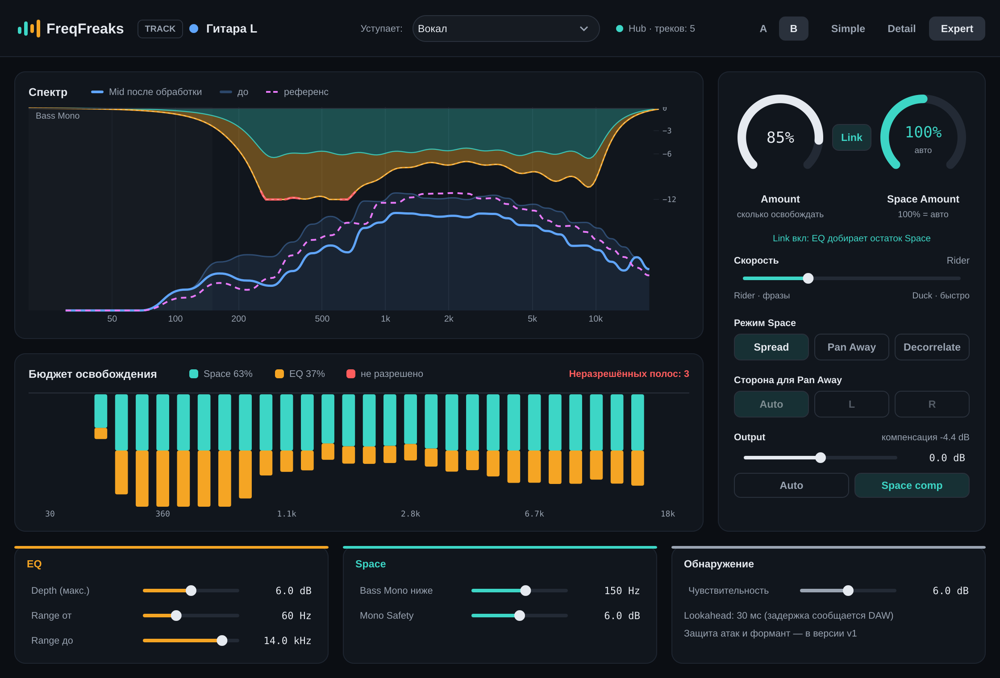
Окно Track в режиме Expert. Наведи мышь на любую ручку — справа внизу, в блоке «Подсказка», появится её описание.
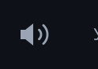
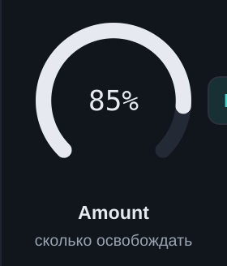
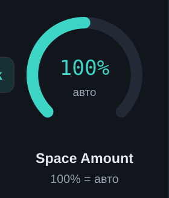
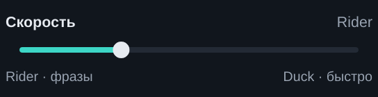
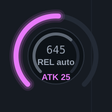
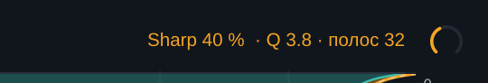
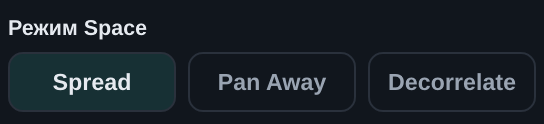
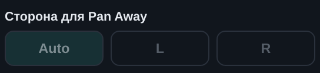
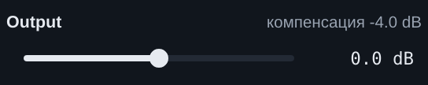
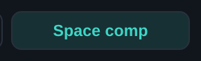
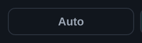
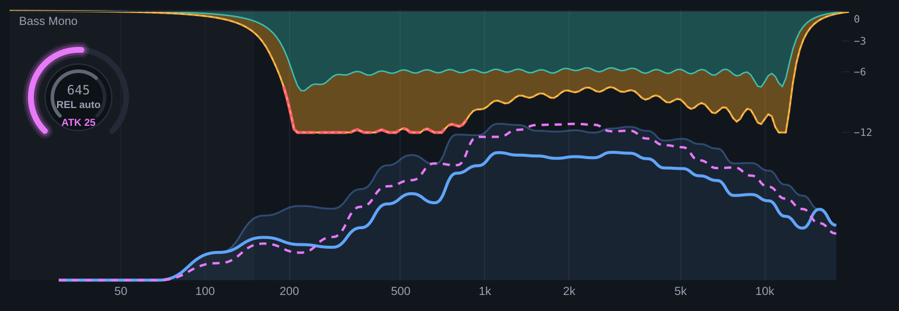
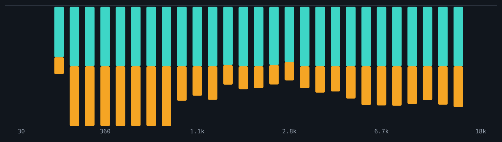
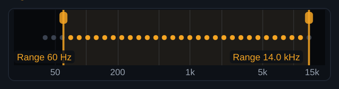
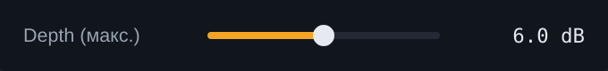
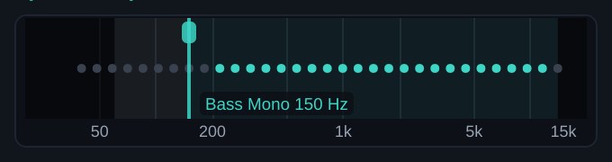
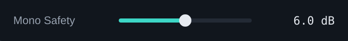
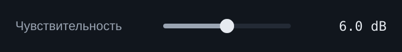
Размер окна: тяни за правый нижний угол (60–200%) или клик по логотипу → меню размеров и «О плагине».

Слева — треки, которые уступают; в центре — карта маскировки; справа — подсказки. Треки-референсы видны только во вкладке «Матрица».
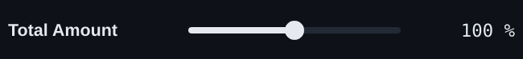
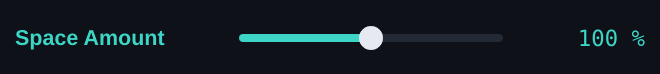
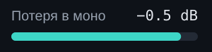
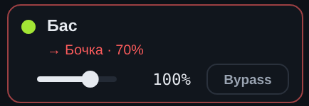
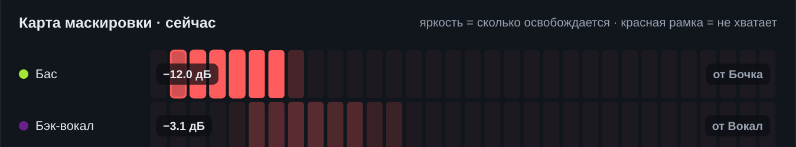
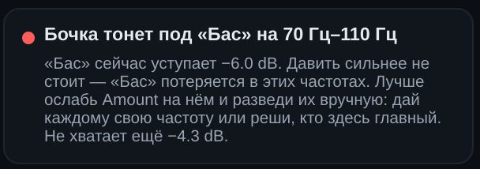
Если подсказка пишет «давить сильнее не стоит» — трек уже отдаёт много. Не увеличивай Amount: лучше разведи инструменты вручную (каждому — своя частота) или реши, кто главный в этом диапазоне.
Главное правило стерео: то, что держит микс в центре — бочка, бас, ведущий вокал, малый, соло, — должно оставаться в центре: им Space Amount 0% или совсем немного. Широко можно разводить то, что создаёт фон: пэды, бэки, клавиши. Тогда стереобаза не расползается, а микс одинаково хорошо звучит в стерео и в моно.
| Инструмент (уступает) | Amount | Space Amount | Режим | Sharp | Ещё |
|---|---|---|---|---|---|
| Бочка, бас, 808, саб | 30–50% | 0% — низ строго в моно | — | 0% | Скорость ближе к Duck; Bass Mono 150–200 Гц |
| Ведущий вокал | обычно сам референс; если уступает — Amount 20–40%, Space 0–20%: голос в центре | Spread | 0–40% | Rider | |
| Малый, хэт, перкуссия | 30–50% | 0–40% — атака остаётся чёткой и на месте | Spread (не Decorrelate) | 0% | Duck |
| Бэк-вокал | 50–70% | 80–120% — бэки по бокам, ведущий в центре | Spread | 0% | Rider |
| Одна гитара / клавиши в центре | 60–80% | 100–150% | Spread или Pan Away | 0–40% | — |
| Двойные гитары (уже L / R) | 50–70% | 30–60% — они уже широкие, больше даст «кашу» и провал в моно | Spread | 0% | Rider |
| Стерео-пианино, клавиши | 50–70% | 60–100% | Spread | 0% | — |
| Пэды, струнные, подложки | 60–90% | 120–200% — широкий фон, чистый центр | Spread; моно-синт — Decorrelate | 0% | Rider |
| Синт-лид, соло | обычно сам референс; если уступает — Space 0–50%, соло держим в центре | Spread | 0–40% | — | |
Проверяй моно. Смотри «Потеря в моно» на Hub. Если хуже −1,5 дБ — убавь Space Amount на самых широких треках (или Space Amount на Hub), либо поставь Mono Safety 3 дБ.
Decorrelate — только для фона (пэды, моно-синты). На ударных, басе и вокале он размывает атаку и центр.
Резкий резонанс (гитара свистит на вокале, синт звенит) — Sharp 60–80% на этом треке: узкий вырез точно в месте конфликта.
| «Hub не найден» | Hub не стоит на мастере, или Track и Hub из разных сборок. Без Hub треки работают как обычно. |
| Нет имени трека | Кликни по имени и впиши своё. В Expert внизу справа видно, что передала DAW. |
| Задержка | 30 мс упреждения — трек уступает заранее, до атаки референса. DAW компенсирует её сама. |
| Нагрузка | ~1–3% одного ядра на трек при 48 кГц. Работает на 44,1–192 кГц. |
| Звук после обновления | При Sharp 0% обработка совпадает с прежними версиями до бита — это проверяет автотест. |
FreqFreaks — Moon Audio Engineering. Бесплатно, GNU GPL v3 или новее, без гарантий. Сделано на JUCE 8 (AGPLv3). Исходный код: github.com/AlLayan-cyber/Freqfreaks